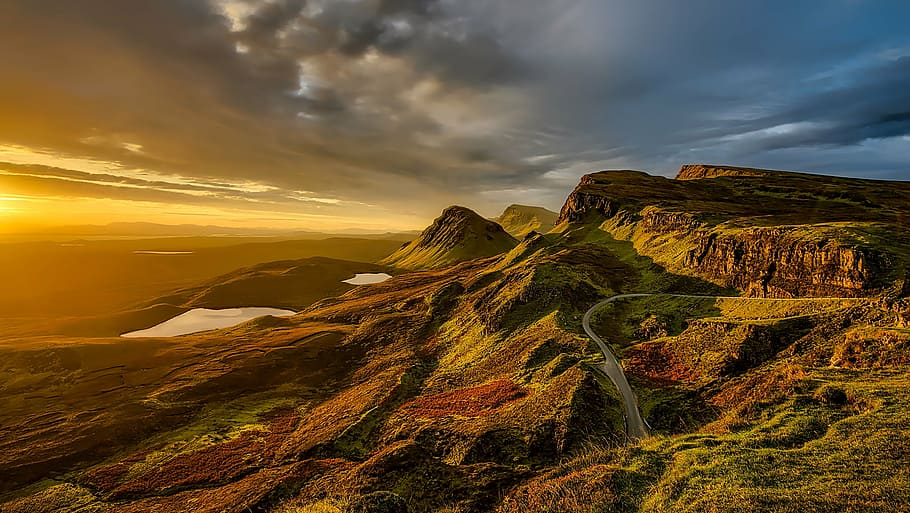

DISCOVER MAJESTIC PLAYGROUNDS OF NATURE HERE
From the towering peaks of the Rocky Mountains to the serene forests of the Great Smoky Mountains, our featured parks provide something for every nature enthusiast. Visitors can explore the dramatic landscapes of Yosemite, with its iconic cliffs and waterfalls, or wander through the geothermal wonders of Yellowstone. The stunning vistas of the Grand Canyon offer unparalleled opportunities for adventure and reflection. At Acadia National Park, coastal trails and rocky beaches invite exploration and tranquility. The lush rainforests and volcanic landscapes of Hawaii Volcanoes National Park provide a glimpse into the powerful forces of nature. Each park featured by the Summit Seekers Nature Society is a testament to the beauty and diversity of our natural world, inviting visitors to connect, learn, and preserve these precious environments.
EMBARK ON EPIC MOUNTAIN JOURNEYS
From the rugged peaks of the White Mountains to the majestic summits of the Rocky Mountains, our selection highlights the best of mountainous landscapes. Mount Pierce offers stunning views from its flat summit, while the challenging ascent of North Kinsman rewards hikers with breathtaking vistas of Franconia Notch. Bondcliff, with its dramatic, isolated beauty, provides one of the most awe-inspiring experiences in the Whites. The wooded summit of Zealand Mountain might be viewless, but the journey there is enriched with scenic outlooks. Mount Cabot stands tall as the highest peak in New Hampshire's North Country, offering historical insights and panoramic views. Each mountain featured by the Summit Seekers Nature Society invites adventurers to discover the wonders of hiking and climbing, encouraging a deeper appreciation for these natural landmarks.
